Living with Demand-Side Changes: A Report for Planning a Convenience Store in Liverpool with Click-and-Collect Facilities
Traditional high-street retail faces crippling challenges due to consumer behaviour changes in the digital era (Great British High Street, 2020). However, few studies have prioritised demand-side indicators in shaping store locations, including consumer propensity for online shopping during the COVID (Pantano et al., 2020). This report attempts to apply GIS analysis to demand and supply appraisals, precluding inappropriate locations and selecting the optimal option for a new convenience store in Liverpool with click-and-collect facilities.
This study adopts location planning criteria proposed by Roig-Tierno et al. (2013; Figure 1). The first two steps identify areas supplied with adequate demand, minimal competition, and maximum commercial opportunities. The next two stages select allocation points suitable for retail development from opportunity areas and assess their socio-demographic conditions by the analogue store approach (Hood et al., 2016).

This step delineates areas with sufficient onsite and online consumers. Parcels with all-day potential footfall above the city median, IMD income deprivation score lower than the city median, as well as a greater-than-national-average prevalence of buying groceries online (Figure 2-4), are determined as opportunity areas (Figure 5). 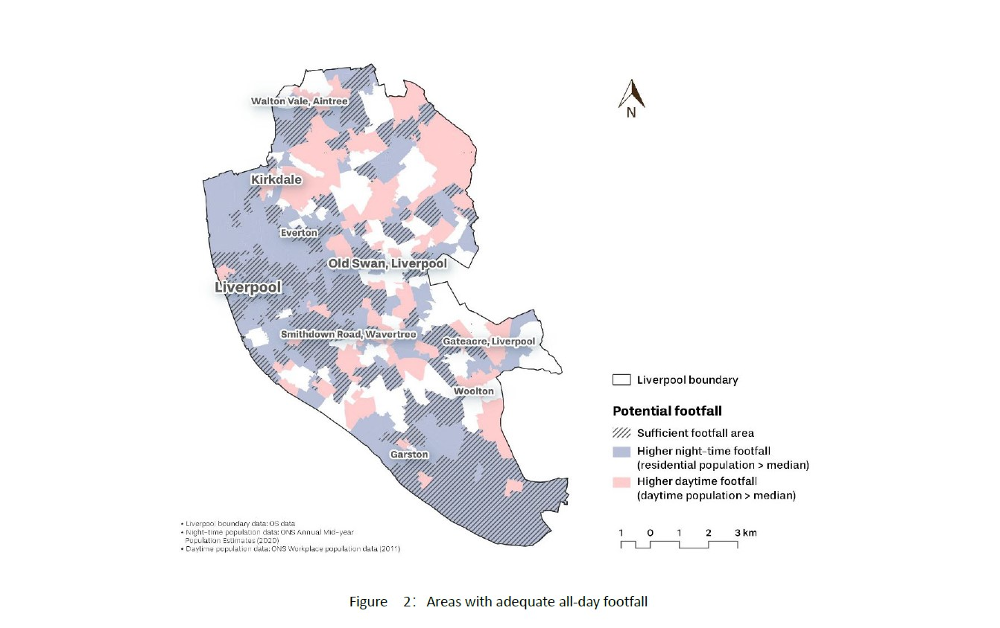 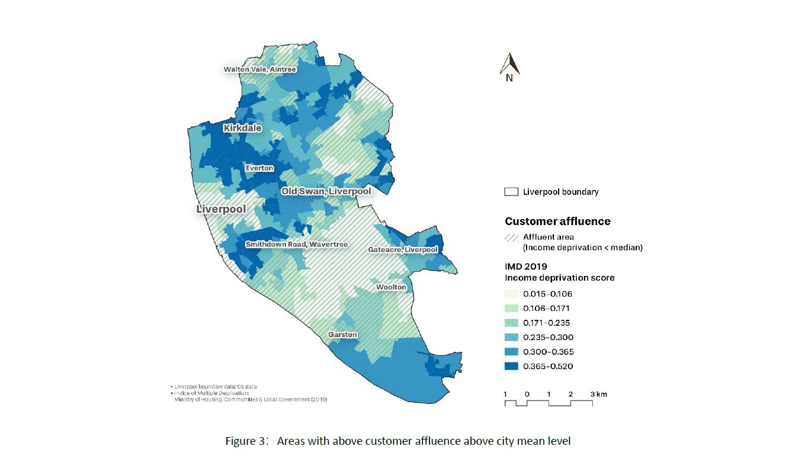 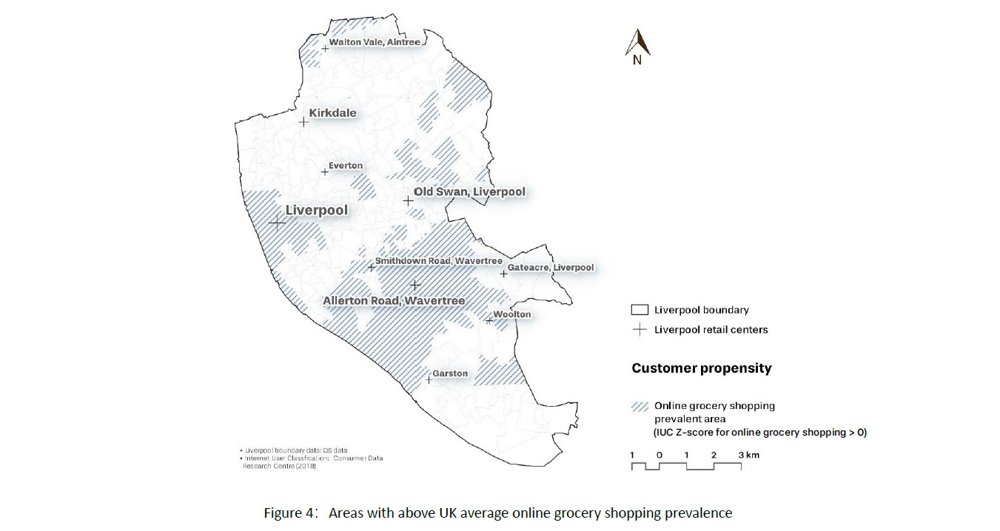 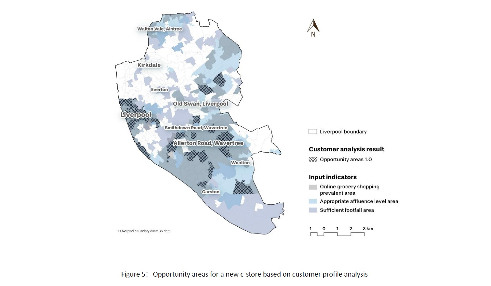
This step eliminates areas with little business prospects. Taking travel barriers into account (Thornton et al., 2012), road network buffers, rather than Euclidian distance, are used to exclude locations inside the catchments of perceived competitors (Figure 6-7). Also, locations outside the Liverpool retail centre buffers are dismissed, as retail agglomeration present more shopping opportunities to costumers (Figure 8; Eppli & Benjamin, 2020). 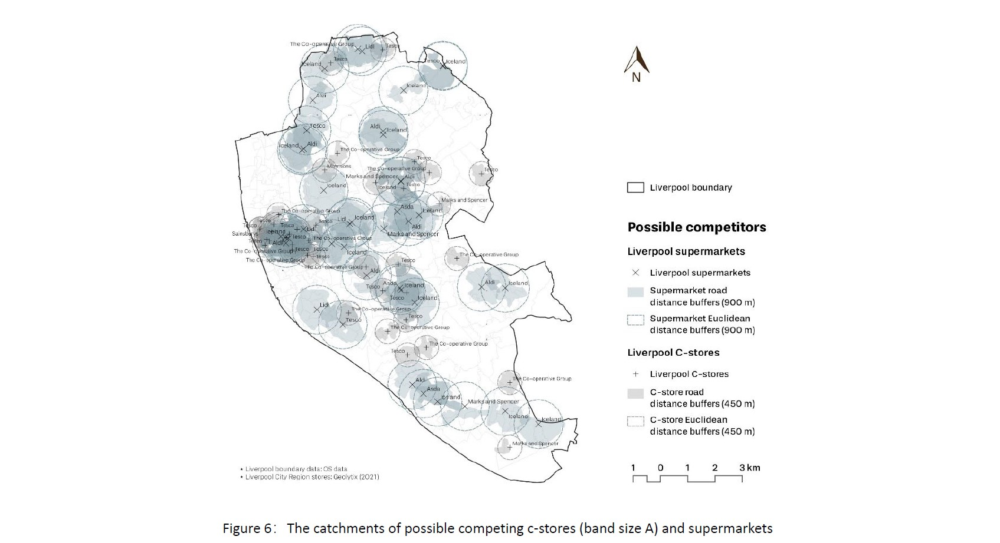 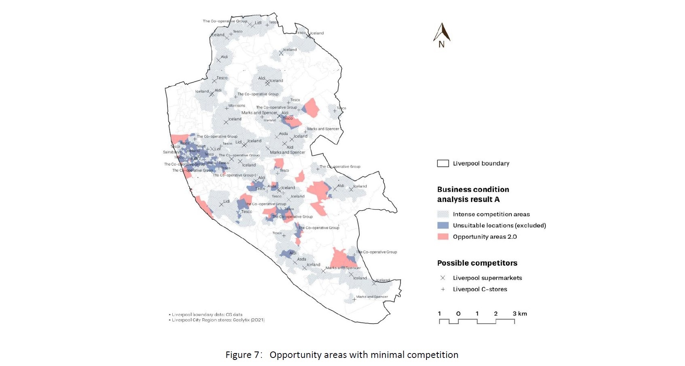 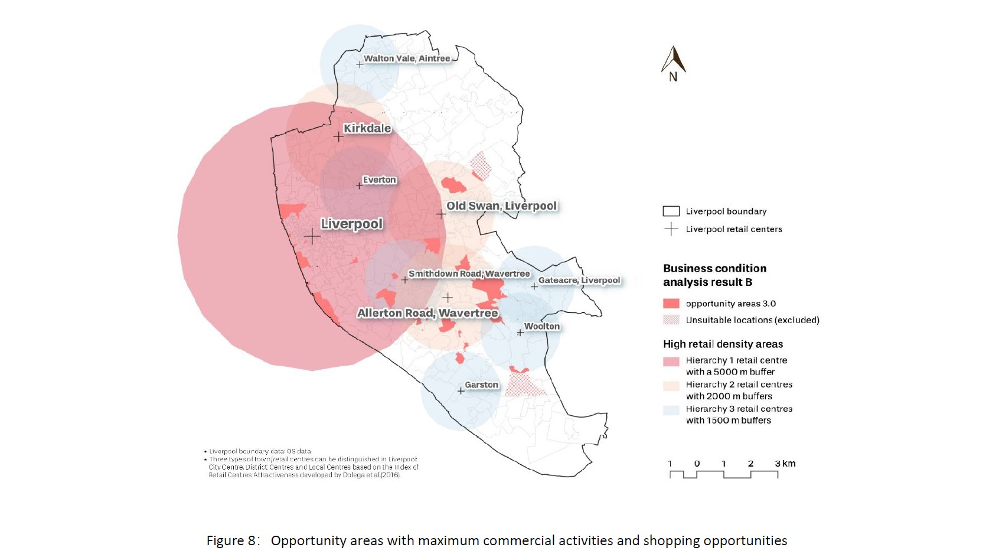
Allocation points are sifted from opportunity areas based on accessibility and land use (Figure 9). Street intersections are considered more permeable than cul-de-sacs or large urban blocks. Areas inside residences or near strategic routes are more suitable for commercial development, compared with the industrial, historic, or ecological zones. 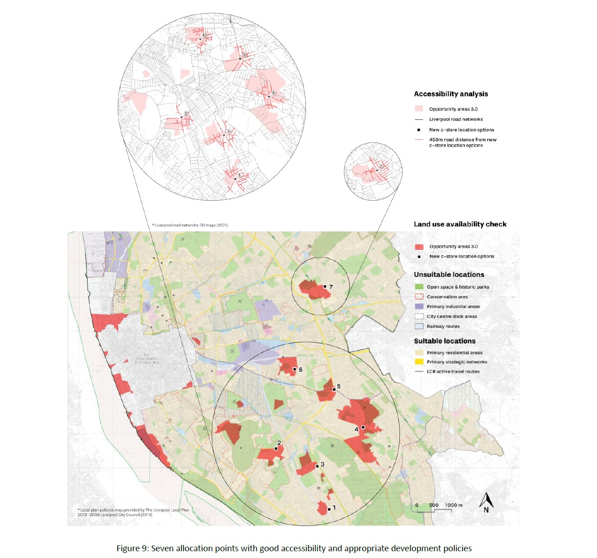
Two c-stores with click-and-collect services provide standards for evaluating social-demographic characteristics of the options' catchments (Figure 10). Option 5 not only contains the greatest footfall, the second-wealthiest populations, a relatively high online grocery shopping prevalence and the least competition among seven options, but also outperforms analogue stores on almost every indicator (Table 1 & 2).
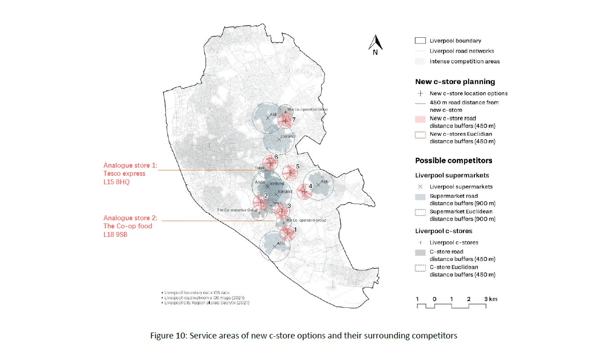
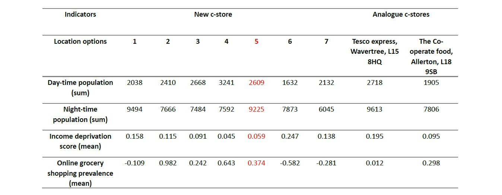

Option 5 (L15 6YB) is subject to site inspections recommended by Wood & Browne (2007). Surrounding parking and bus stops give this two-story shop easy access; the synergy of retailers along bustling and diversified street frontages provides it with massive customers (Figure 11, Karande & Lombard, 2005). The gable roof shown in Figure 12 demonstrates great visibility; the use of a vacant plot promotes efficient land use.
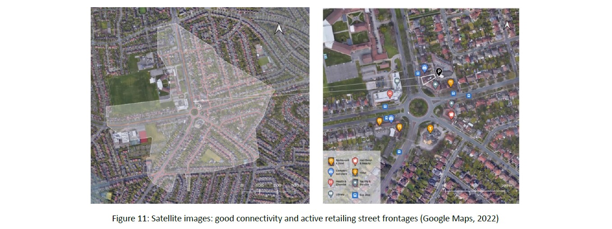 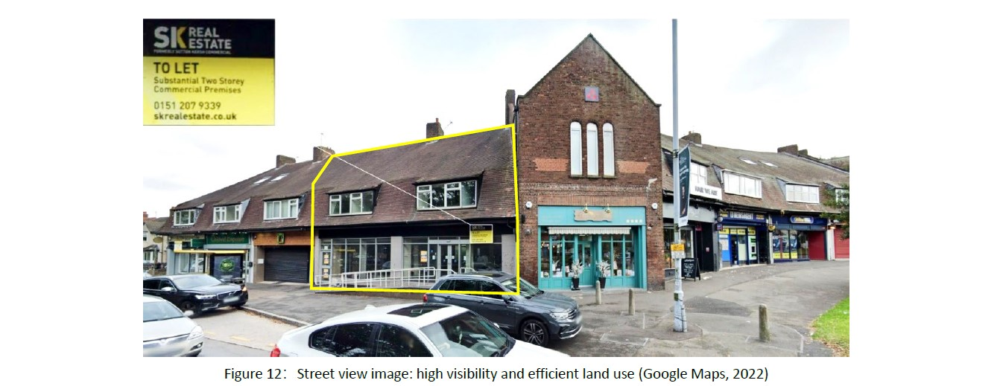This study focusses on c-store planning strategies with click-and-collect facilities, offering guidance on high street revitalization under the digital trend. By adopting consumer analysis in the initial screening and final selection optimisation stages, it compensates insufficient attention devoted to the demand side. Given the paucity of data below LSOA levels, the ambiguity of analogue shop selection (Wood & Brown, 2007), and the limitations of GIS techniques (Hernandez & Bennison, 2000), methodological improvements are still needed.
Eppli, M & Benjamin, J. (1994) ‘The Evolution of Shopping Center Research: A Review and Analysis’, Journal of Real Estate Research, 9(1), pp. 5-32. DOI: 10.1080/10835547.1994.12090737
Hernández, T. & Bennison, D. (2000) ‘The art and science of retail location decisions’, International Journal of Retail & Distribution Management, 28(8), pp. 357-367. DOI: 10.1108/09590550010337391
Hood, N., Clarke, G. & Clarke, M. (2016) ‘Segmenting the growing UK convenience store market for retail location planning’, The International Review of Retail, Distribution and Consumer Research, 26(2), pp. 113-136. DOI: 10.1080/09593969.2015.1086403
Karande, K. & Lombard, J. R. (2005) ‘Location strategies of broad-line retailers: an empirical investigation’, Journal of Business Research, 58(5), pp. 687-695. DOI: 10.1016/j.jbusres.2003.09.008.
Pantano, E., Pizzi, G., Scarpi, D., Dennis, C. (2020) ‘Competing during a pandemic? Retailers’ ups and downs during the COVID-19 outbreak’, Journal of Business Research, 116, pp. 209-213, DOI: 10.1016/j.jbusres.2020.05.036.
Roig-Tierno, N., Baviera-Puig, A., Buitrago-Vera, J. & Mas-Verdu, F. (2013) ‘The retail site location decision process using GIS and the analytical hierarchy process’, Applied Geography, 40, pp. 191-198. DOI: 10.1016/j.apgeog.2013.03.005.
The Great British High Street (2020) The Digital High Street 2020 Report. Digital High Street Advisory Board.
Thornton, L.E., Pearce, J.R., Macdonald, L. Lamb, K. E. & Ellaway, A. (2012) ‘Does the choice of neighbourhood supermarket access measure influence associations with individual-level fruit and vegetable consumption? A case study from Glasgow. International Journal of Health Geographics, 11(29), pp. 2-12. DOI: 10.1186/1476-072X-11-29
Wood, S. & Brown, S. (2007) ‘Convenience store location planning and forecasting - A practical research agenda’, International Journal of Retail & Distribution Management, 35(4), pp. 233-255. DOI: 10.1108/09590550710736184